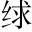

鄭子產有疾，謂子大叔遊吉也。曰：「我死，子必為政。唯有德者能以寬服民，其次莫如猛兩語，是子產治鄭心訣。。夫火烈，民望而畏之，故鮮上聲。死焉以火喻猛。；水懦弱，民狎而玩之，則多死焉以水喻寬。，故寬難非有德者不能。○玩其「次」字、「寬難」字，便見寬為上，不得已而用猛。而用猛正是保民之惠處，此自大經濟人語。。」疾數月而卒。
大叔為政，不忍猛而寬著「不忍」二字，便見是婦人之仁，非真能寬也。。鄭國多盜，取人於萑桓。苻蒲。之澤取人，劫其財也。萑苻，澤名。。大叔悔之，曰：「吾早從夫子，不及此夫子，謂子產。。」興徒兵以攻萑苻之盜，盡殺之，盜少止著「盡殺」二字，便見是酷吏之虐，非善用猛也。。
仲尼曰：「善哉嘆美子產為政。! 」政寬則民慢，慢則糾之以猛。猛則民殘，殘則施之以寬寬、猛各有弊，當有以相濟。。寬以濟猛，猛以濟寬，政是以和「和」字，從「濟」字看出。。《詩》曰《大雅·民勞》篇。:「民亦勞止，汔肸。可小康；惠此中國，以綏四方止，語辭。汔，其也。康、綏，皆安也。言今民亦勞甚矣，其可以小安之乎？當加惠於京師，以綏安夫諸夏之人。'，施之以寬也引《詩》釋寬。。「毋從去聲。詭隨，以謹無良；式遏寇虐，慘不畏明詭隨，謂詭人隨人、心不正者。謹，敕也。式，用也。慘，曾也。言詭隨者不可從，以謹敕不善之人，用遏止此寇虐而曾不畏明法者。'，糾之以猛也引《詩》釋猛。。「柔遠能邇，以定我王柔安遠人，使之懷附，而近者各以能進，以安定我王室。'，平之以和也「平」字，是寬猛相濟處。○引《詩》釋和。○一詩分引釋之，便見政和，是寬猛一時併到，不可偏勝也。。又曰《商頌·長髮》篇。, 「不競不求。，不剛不柔，佈政優優，百祿是遒競，強也。'，和之至也，急也。優優，和也。遒，聚也。言湯之為政不太強、不太急、不太剛、不太柔，優優然而甚和，故百種福祿皆遒聚也。。」及子產卒，仲尼聞之，出涕曰：「古之遺愛也引《詩》嘆和之至。見得和到極處，而寬猛之跡俱化。進一層說。。」
子產不是一味任猛，蓋立法嚴則民不犯，正所以全其生。此中大有作用。太叔始寬而繼猛，殊失子產授政之意。觀孔子嘆美子產，而以寬猛相濟立論，則政和，諒非用猛所能致；末以遺愛結之，便有分曉。